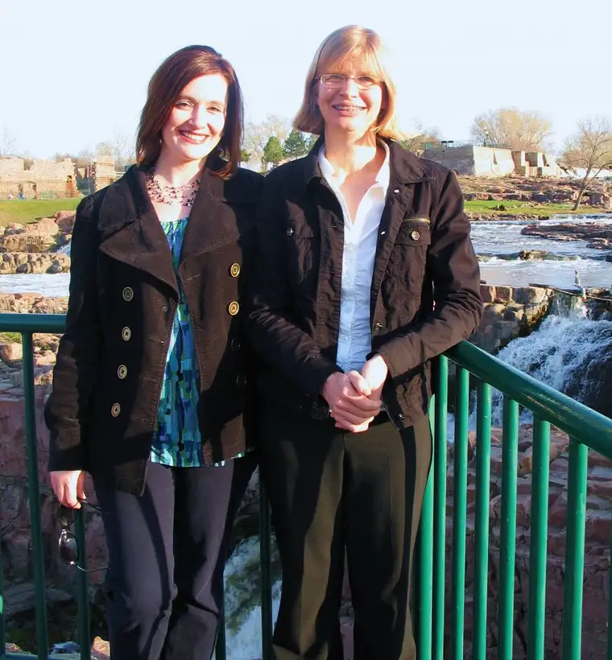

{kind=link}

Me and my author friend, Jean Patrick, in Sioux Falls, SDFor the past twelve years, I’ve attended at least one writer’s conference a year. Though there’s never been a year in which doing so has not been a financial sacrifice, neither has there been a year when I’ve left a conference feeling the sacrifice was wasted.
The conference I’ve attended most frequently has been one for children’s writers and illustrators in
I also had the great privilege of attending the coveted Highlights-sponsored Writers Workshop at Chautauqua in 2002. I arrived in
For the past two summers, I’ve gone on a writing retreat at St. Benedict’s Monastery as a scholar through a program that has offered me reprieve from a busy summer at home and a haven in which to write, pray and eat without distraction.
This past fall, I attended the National Federation of Press Women communications conference in
Most recently, this past weekend, I enjoyed a Society of Children’s Book Writers and Illustrators conference in Sioux Falls, SD, an experience that afforded me the unexpected chance to not only learn from but dine with (twice) an editor from Simon & Schuster and an agent from Upstart Crow Literary, as well as other faculty and attendants.
Fresh from the benefits of this weekend’s conference, I felt inspired to mention in my debut post at Peace Garden Writer that if you are a writer, whether seasoned or otherwise, or dream of being one, don’t hesitate to consider and attend a conference. Do whatever you can to find one that meets as many of your expectations and needs as possible. They are everywhere, just waiting for you to show up and be transformed.
Perhaps if the above isn’t enough to convince you, this list of “Top Ten Reasons to Attend a Writers’ Conference” will be:
10. You don’t feel anyone takes your writing dreams seriously. A conference can be the beginning of you taking yourself seriously, which can start you on the path of becoming a true writer.
9. The food is generally excellent, and you don’t have to cook for yourself or your family for a day or two or more. (This alone makes it so worth the effort!)
8. You will have a chance to meet folks in the publishing world you would not have access to any other way – editors, publishers, illustrators, agents; i.e., the movers and shakers.
7. Oftentimes, editors at conferences, even if they are closed to submissions, will allow one submission from each conference attendant. They are looking to discover new authors, just as you are looking to be discovered. Sometimes they offer critiques of samples of your work, which can also be very valuable.
6. Even if you don’t get signed on with an agent or editor, you will be one step closer to reaching that eventual dream. You certainly will be closer than your friend who decided to stay home and catch up on re-runs of “Survivor.”
5. Everyone needs to get away from Dodge every once in a while. Here’s your chance to do that and learn some really awesome things that will have a direct impact on the success of your writing life.
4. If you’ve never been in a room filled with kindred spirits, it’s high time you experienced that amazing thrill.
3. By staying home, you’ll miss the chance to hear stories like how one author narrowly escaped death while observing leopard seals in the Antarctic (see this post).
2. If you don’t go, you’ll be denied the chance to hear about the debut best-selling novel, Puppies in Space. (This is an inside joke you’ll only appreciate if you attended the conference I did this past weekend. You don’t want to have to keep missing out on all the good inside jokes, do you?)
1. Impossible things are happening every day, and you won’t know if it’s your day unless you show up!
Q 4 U: What’s the best thing that’s ever happened to you at a conference? If you’ve never attended one, what would be your hoped-for outcome if you did have the chance?